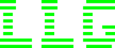

 |Portfolio Léo Linux|DÉVELOPPEMENT PROFESSIONNEL|
> menu
----------------------------------------------
┌────────────────────────────────────────────────────────┐
│ COMPÉTENCE : ORGANISER SON DÉVELOPPEMENT PROFESSIONNEL │
└────────────────────────────────────────────────────────┘
Catégorie : Projet personnel / Évolution de carrière
Apprise et pratiquée entre 2023 et 2025
╔══════════════════════════════╗
║ DESCRIPTION DE LA COMPÉTENCE ║
╚══════════════════════════════╝
Mettre en place une veille technologique personnelle
Formaliser ses acquis dans un portfolio ou CV
Analyser les attentes d’un métier, d’une certification
╔═══════════════════════╗
║ SAVOIR-FAIRE ASSOCIÉS ║
╚═══════════════════════╝
✔ Rédaction d’un CV structuré et mis à jour
✔ Conception et animation d’un portfolio interactif
✔ Veille régulière sur les évolutions techniques
✔ Compréhension des tendances métier (certif, salaires…)
╔═════════════════╗
║ OUTILS UTILISÉS ║
╚═════════════════╝
> HTML / CSS / JavaScript
> GitHub Pages, Markdown
> Feedly, Certif.info, LinkedIn
> Framasoft, Zeste de Savoir, YouTube Tech
╔═══════════════════════════════════╗
║ MISE EN PRATIQUE DANS LES PROJETS ║
╚═══════════════════════════════════╝
→ Page CV, veille technologique et présentation personnelle
╔═════════════════════════════════╗
║ AUTO-ÉVALUATION & AMÉLIORATIONS ║
╚═════════════════════════════════╝
✔ Portfolio complet et esthétique terminal rétro
✔ Source unique pour mes projets et parcours
✘ Ajouter des preuves de certification ou badges
✘ Prévoir une version anglaise à long terme
---------------------------------------
_Windows devs fear change. Linux devs compile it._